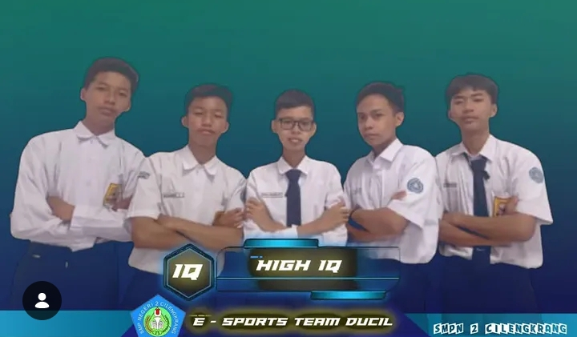
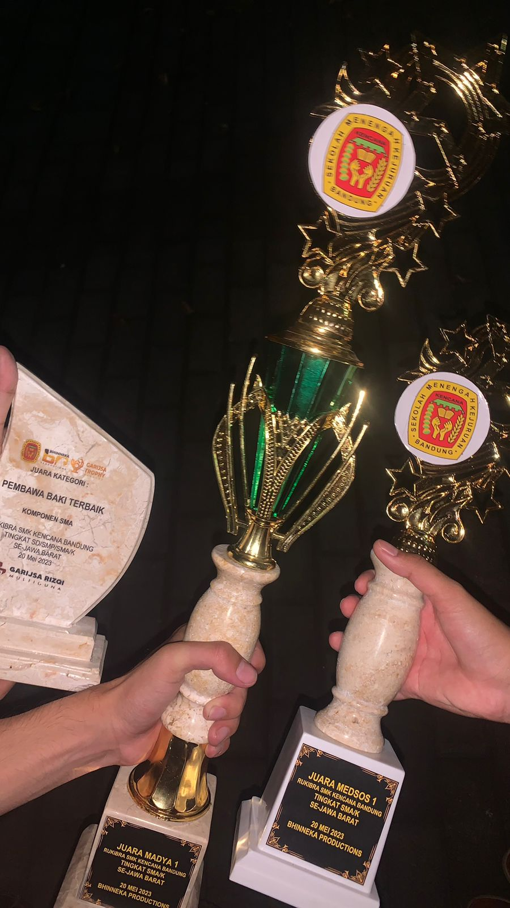

menjadi anggota pendiri esktrakulikuler smpn 2 cilengkrang esport cabang mobile legend
|  |
|---|
link osis SMPN 2 Cilengkrang: Dokumentasi
Menjadi Juara Madya 1 RUKIBRA SMK KENCANA BANDUNG Tingkat SMA/K Sejawa Barat
|  |
|---|
link Profil: Lihat Profil
Tertarik berdiskusi? hubungi saya